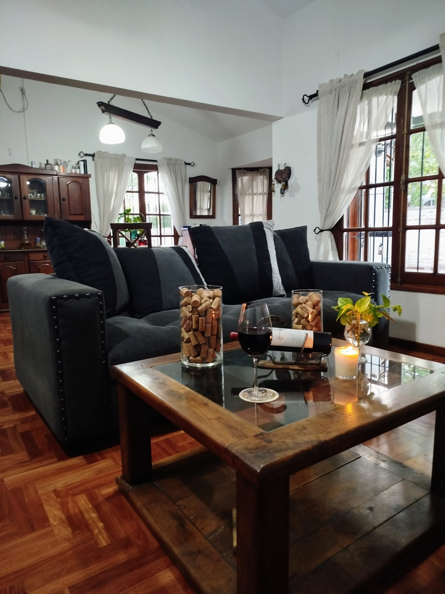
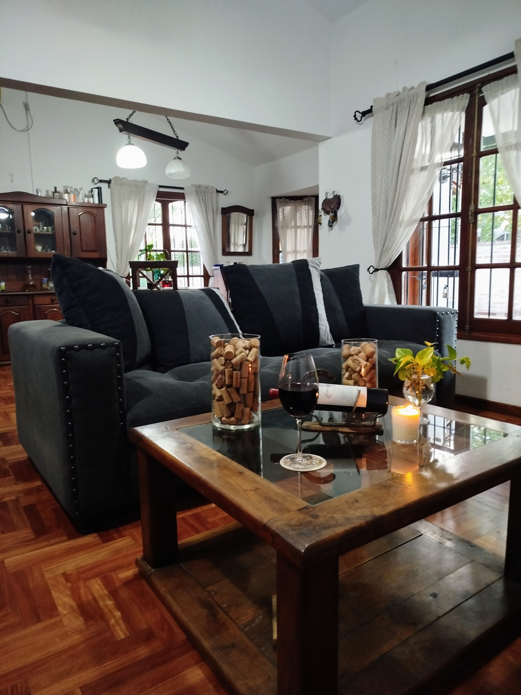
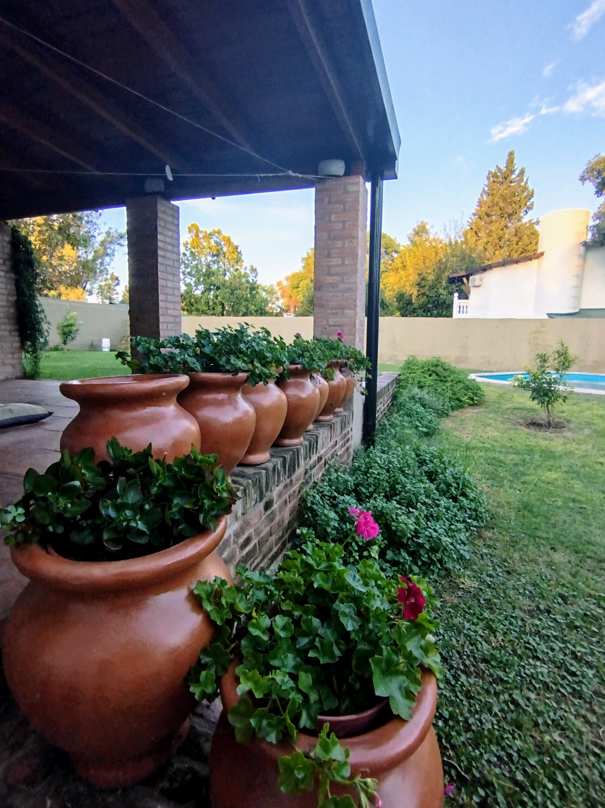
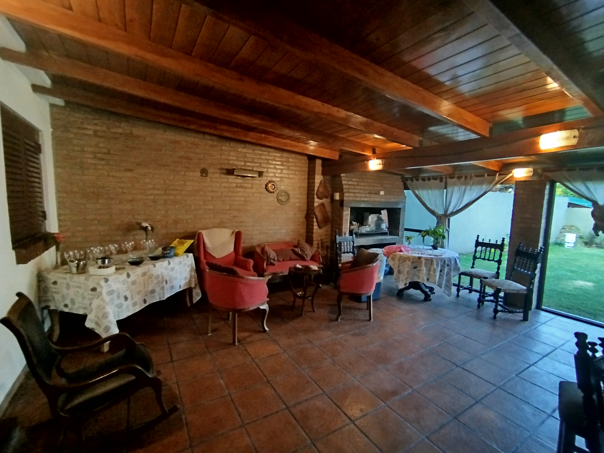
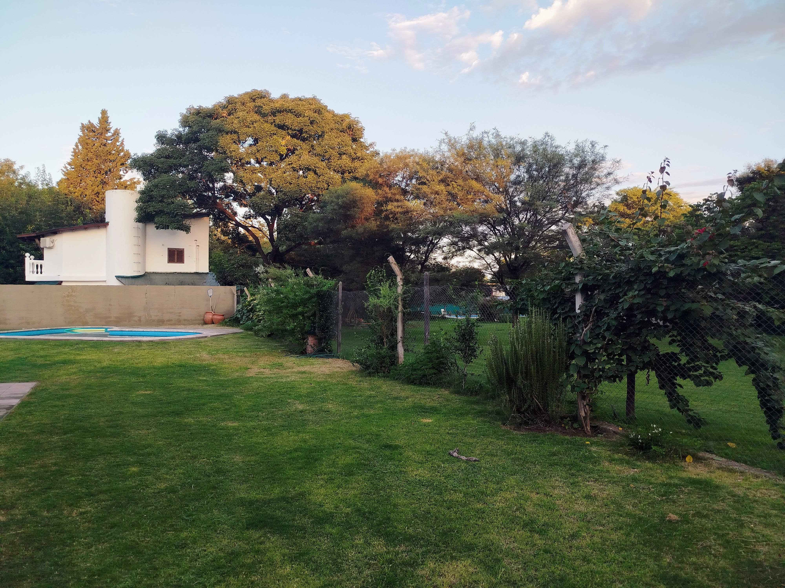
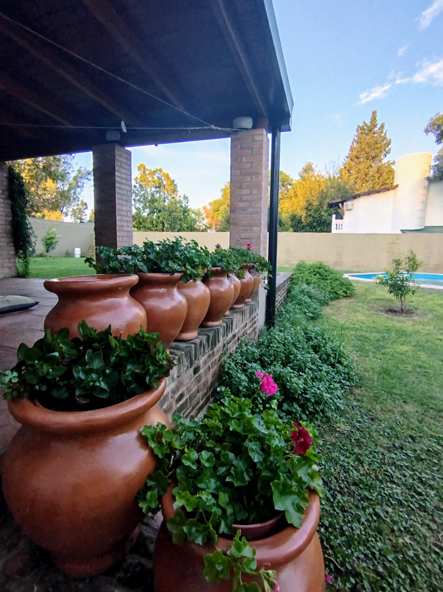
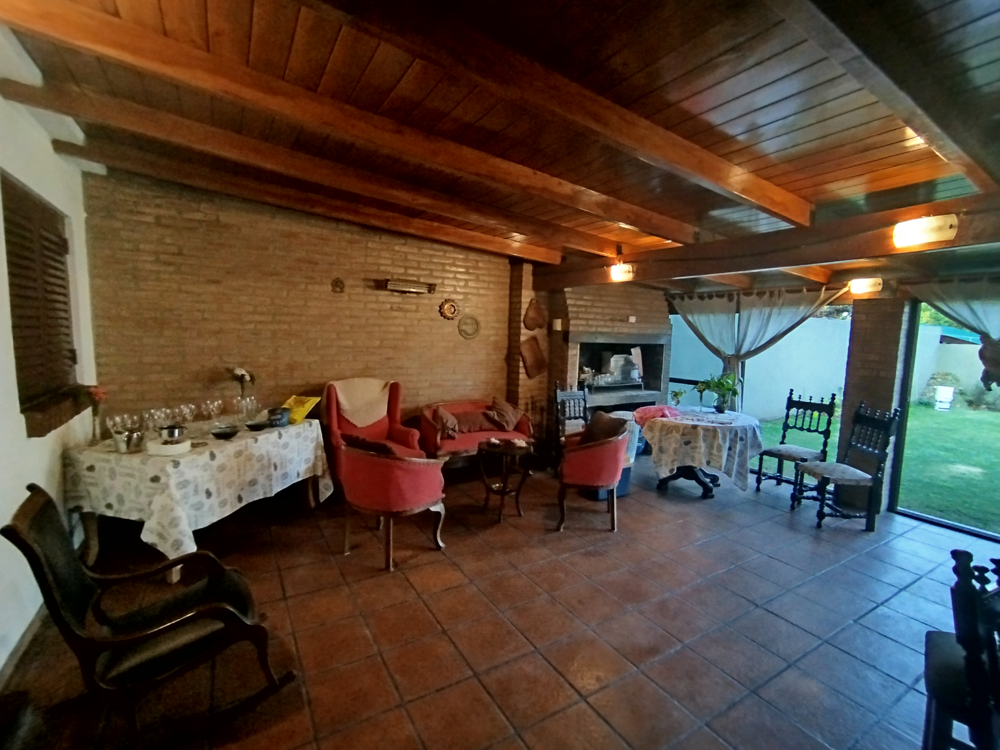
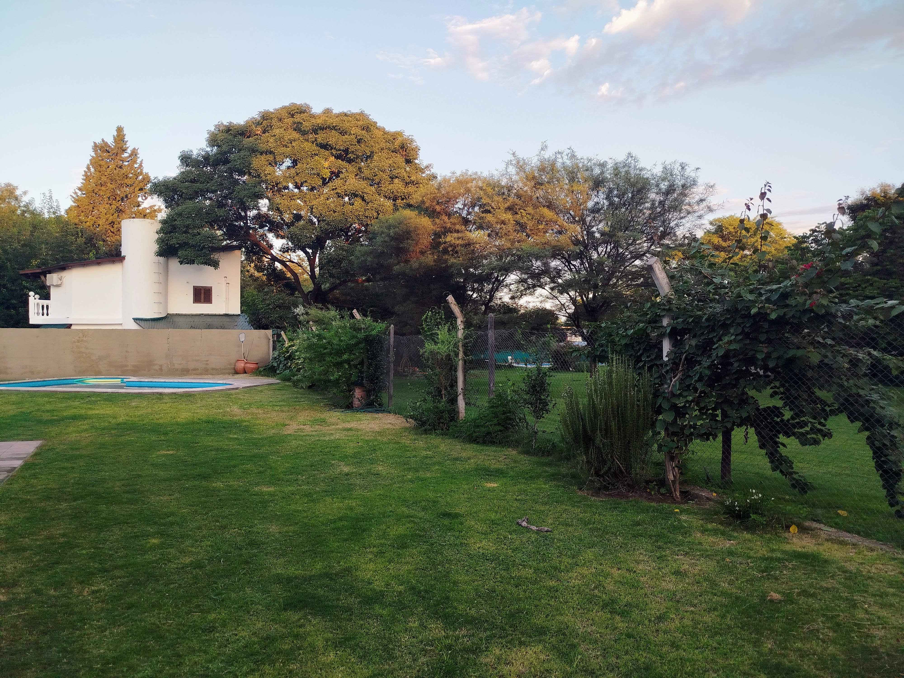

Villa Allende y Mendiolaza son polos gastronómicos reconocidos, con
una variada oferta de platos típicos y cocina gourmet. Y desde
Traveller's Lodge, podés llegar fácilmente a los principales
atractivos de la zona:
🌊 Reserva Hídrica La Quebrada
25 km – senderismo, cascadas y actividades acuáticas sin
motor.
⛪ Museo Capilla de Buffo
20 km – historia, naturaleza y mountainbike en la Reserva Los
Quebrachitos.
🏞 Camino del Cuadrado
Vistas panorámicas al Valle de Punilla, ideales para una escapada
con sabor serrano.
☀ Laguna Azul
8 km – balneario con bar, gastronomía y buena música, muy elegido
por jóvenes.
🚡 Cerro Pan de Azúcar
20 km – trekking, aerosilla, museo del tango y restaurantes al
pie del cerro.
⛳ El Terrón Golf Club
10 min – exclusivo campo de golf de 18 hoyos en Estancia El
Terrón.
🌄 Te esperamos para que vivas una experiencia inolvidable en las
Sierras Chicas.
 +54 9 351 315-3183
+54 9 351 315-3183
 

 




